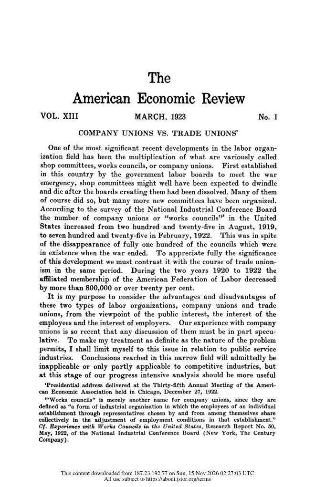

Seager e a escolha entre sindicato de empresa e de ofício
Leitura: 9 min
No discurso presidencial de 1922, Henry R. Seager compara as duas formas de organização operária nos serviços públicos e conclui que a escolha depende do tipo de empregador.


Em agosto de 1919, havia nos Estados Unidos 225 conselhos de fábrica, organizações de representação restritas aos empregados de uma só empresa. Em fevereiro de 1922, eram 725, apesar de pelo menos cem dos que existiam no fim da guerra terem desaparecido. Os números, do National Industrial Conference Board, abrem o discurso presidencial que Henry R. Seager, da Columbia University, leu na reunião anual da American Economic Association em Chicago, em 27 de dezembro de 1922. O contraste vem logo depois: de 1920 a 1922, a filiação à American Federation of Labor caiu mais de 800 mil membros, mais de 20%.
Por que limitar a pergunta aos serviços públicos?
Para tornar a análise tão definida quanto possível, o autor se restringe às indústrias de serviço público, definidas como aquelas cuja operação contínua é vital para o interesse público, como bondes e ferrovias. As conclusões, admite, valem pouco ou só em parte para as indústrias competitivas; nesta etapa, uma análise intensiva lhe parece mais útil que conclusões de longo alcance.
O Congresso levou anos para reconhecer que as ferrovias exigiam medidas especiais. A lei Erdman, de 1898, apostou em mediação, conciliação e arbitragem voluntária, e por algum tempo bastou. A lei Newlands, de 1913, montou um mecanismo mais elaborado. A lei Adamson, de 1916, introduziu o princípio de que certos padrões básicos, no caso a jornada-padrão, seriam fixados por lei; em nota, Seager observa que ela tornava padrão o dia de oito horas sem desestimular jornadas maiores, e era sobretudo uma lei de aumento salarial. A Transportation Act, de 1920, criou o Railroad Labor Board, com sete critérios para salários e condições justos e razoáveis, e declarou dever das partes evitar interrupções, mas sem prever penas.
Para onde caminhava a política trabalhista?
A greve das oficinas ferroviárias do verão de 1922 mostrou, para o autor, que o Congresso teria de ir além. O presidente Harding propôs transferir as funções do Railroad Labor Board para uma divisão trabalhista de uma Interstate Commerce Commission ampliada, dar força de lei às suas decisões e proibir greves ferroviárias. No mesmo inverno em que o Congresso aprovou a Transportation Act, o Kansas, sob o governador Allen, criou um tribunal industrial com amplos poderes sobre salários, jornadas e condições de trabalho nas indústrias afetadas por interesse público, e proibiu greves nelas com penas severas.
Seager não arrisca prever a legislação imediata, mas sustenta que a lógica da situação levará a fortalecer, e não enfraquecer, o mecanismo de operação contínua: juntas ou tribunais com autoridade, padrões de salário e condições fixados em lei e proibição da greve com penas aplicáveis. Prefere multas que persigam o infrator até serem pagas, como na Nova Zelândia, à prisão; em nota, atribui parte da reação contra a lei do Kansas à severidade das penas.
Há duas razões para essa previsão. A primeira é que a opinião pública condena de antemão quem interrompe um serviço vital, qualquer que seja a provocação; por isso, diz, a greve das oficinas estava perdida antes de começar. A segunda, mais forte, é que o poder público já regula tarifas e qualidade do serviço e não pode exigir tarifas razoáveis sem exigir também custos razoáveis, inclusive os salários.
“A arma da greve nessas indústrias começa a ser um bumerangue.” (“the strike weapon in these industries is beginning to be a boomerang”)
Quais critérios decidem a comparação?
O autor define os testes. Para o público, importam a operação contínua, a economia e a eficiência e a formação de trabalhadores e cidadãos mais inteligentes, capazes e dedicados ao bem público. Para os empregados, além da eficiência, pesam a remuneração liberal, a jornada moderada, condições seguras e a maior participação na fixação das condições de trabalho compatível com a eficiência. Para os empregadores, contam a operação contínua, a máxima eficiência, o baixo custo do trabalho e a aceitação das mudanças que a gerência julga necessárias.
Em economia, eficiência e continuidade, Seager dá vantagem ao sindicato de empresa. Restrito aos empregados de uma só organização, ele desenvolve interesse por ela; seus representantes conhecem os problemas de produção e percebem a comunidade de interesses com o empregador. O sindicato de ofício, que reúne empregados de muitas empresas concorrentes, enfatiza por construção a oposição de interesses, como mostram, diz o autor, o preâmbulo da constituição da American Federation of Labor e os da maioria dos sindicatos filiados. Seus dirigentes, individualmente, muitas vezes reconhecem o lado cooperativo da relação, mas a forma da organização os impede de agir assim.
Quem defende melhor o salário?
Nos interesses principais dos empregados, a vantagem passa ao sindicato de ofício, por três motivos. Os membros do sindicato de empresa, inclusive seus dirigentes, dependem da boa vontade do empregador; o caráter local os impede de conhecer condições mais favoráveis em outros estabelecimentos; e, sem apoio de fora, pouco podem fazer contra mudanças desfavoráveis. O sindicato de ofício tem dirigentes independentes, visão do setor no país e o respaldo dos demais membros, que dissuade o empregador.
Seager ressalva o outro lado. A ênfase excessiva na luta pode prejudicar tanto a produção que a parcela maior de um produto menor deixe os trabalhadores em situação pior do que a parcela menor de um produto maior. Cita os ofícios da construção em Nova York e Chicago, onde, diz, os trabalhadores pagam em desemprego e emprego irregular um preço alto pelas regras restritivas de seus sindicatos.
O que muda quando a greve é proibida?
Quando a lei fixa padrões, cria tribunais e proíbe a greve, as vantagens do sindicato de ofício ficam em boa parte neutralizadas. Isso explica, para o autor, a oposição dos dirigentes sindicais a qualquer limite ao direito de greve, mesmo quando sabem que usá-lo provocaria uma reação pública que o condenaria ao fracasso. O exemplo é o dos empregados de uma empresa de bondes do Kansas, que podem levar suas demandas ao tribunal industrial e a quem a organização nacional tem pouco a oferecer. Se o empregador acrescentar ao sindicato de empresa planos de compra de ações, participação nos lucros e seguros contra doença, desemprego e velhice, desde que o poder público mantenha padrões justos de salário e jornada, as promessas do sindicato nacional perdem força.
Qual forma prepara o melhor cidadão?
Este é, para o autor, o aspecto que mais interessa aos economistas. Seu ideal é uma sociedade industrial em que o nível médio de inteligência suba, a propriedade do capital se difunda, os trabalhadores sejam mais bem pagos por trabalho mais agradável e com mais lazer, os serviços públicos possam ser operados pelo governo com eficiência, as cooperativas prosperem e os empregados de empresas privadas tenham voz crescente e parte razoável nos lucros. Os sindicatos de ofício, reconhece, deram contribuição de valor inestimável a esse ideal, e por isso se desenvolveram como organizações de luta.
Muitos sindicatos de empresa recentes, admite, pouco têm a recomendá-los: foram impostos por empregadores que exigiam a filiação e proibiam qualquer outra organização. Outros não impõem esse limite e atraem a grande maioria dos empregados. A escolha, conclui, depende do tipo de empregador: enquanto predominar o empregador explorador, movido só pelo lucro, a preferência deve ser sem reservas pelo sindicato de luta; à medida que predominar o empregador cooperativo, que se vê como sócio sênior dos empregados, crescerá o campo do sindicato de empresa, como passo para a verdadeira sociedade na indústria.
E a solidariedade dos trabalhadores?
Seager não espera que a solidariedade dos assalariados enfraqueça enquanto durar o sistema de salários. Prevê que ela passará em parte do campo industrial para o político: com juntas de ajuste, padrões legais e seguro social, os trabalhadores terão cada vez mais motivo para cuidar da política, como no Reino Unido, na Austrália e na Nova Zelândia, onde o partido trabalhista se tornou o principal partido de oposição. Sua última palavra é a esperança de que essas indústrias passem a ser dominadas pelo motivo do serviço público.
“Cada um por todos e todos por cada um.” (“Each for all and all for each”)
Na minha leitura
Na minha leitura, o discurso é um exercício de desenho institucional. Seager não julga as formas de organização em bloco: separa os objetivos de cada parte, atribui a cada forma as vantagens que decorrem de sua estrutura, local ou nacional, dependente ou independente do empregador, e mostra como a regulação muda o valor relativo dessas vantagens.
O ponto central é a interação entre regulação de preços e mercado de trabalho. Quando o Estado fixa a tarifa de um serviço essencial e proíbe sua interrupção, a negociação salarial deixa de ser um conflito bilateral e passa a ser um item do custo regulado. O argumento antecipa a questão de quem deve fixar salários quando o produto tem preço administrado.
Glossário
- Sindicato de empresa (company union)
- organização de representação restrita aos empregados de uma só empresa.
- Sindicato de ofício (trade union)
- organização que reúne trabalhadores de um ofício ou setor em várias empresas.
- Railroad Labor Board
- junta federal criada em 1920 para fixar salários e condições nas ferrovias.
- Tribunal industrial do Kansas
- corte estadual com poder de regular salários e condições e de proibir greves em indústrias de interesse público.
Fontes
- Company Unions vs. Trade Unions — Henry R. Seager (Columbia University) (pp. 1–13). JSTOR · Internet Archive (número completo, PDF)
- Edição completa, com os demais artigos: Nº 180 do Arquivo.
Documento em domínio público (EUA, publicado antes de 1931), via JSTOR Early Journal Content e Internet Archive. Resumo e comentário do autor deste site, sem afiliação com a American Economic Association. Encontrou um erro? Escreva: a correção é publicada no próprio texto, com data.
↑ Nº 180 · Seager, os sindicatos de empresa, a tarifa de 1922 e a Europa Berglund e a tarifa de 1922, item por item →